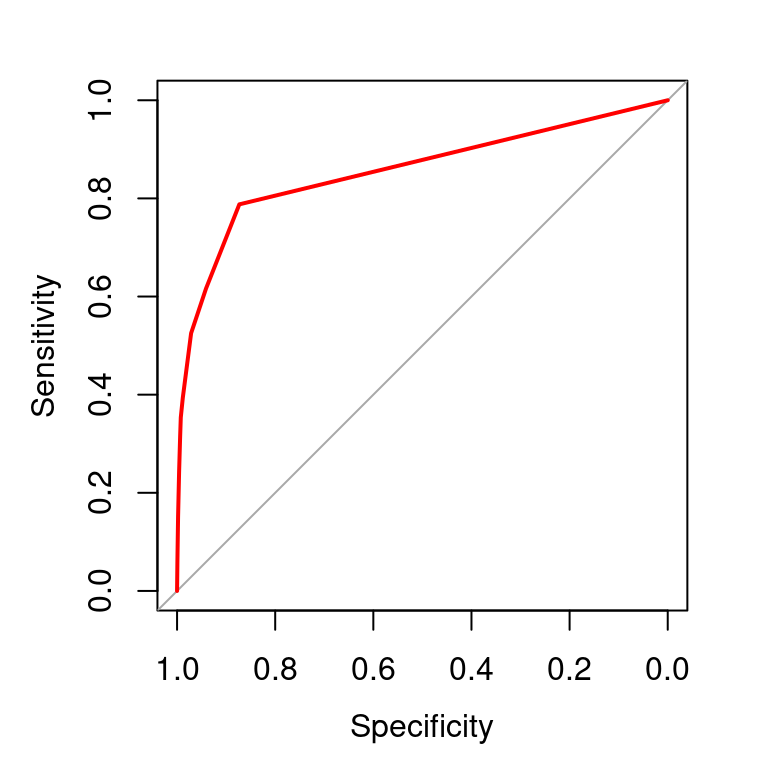
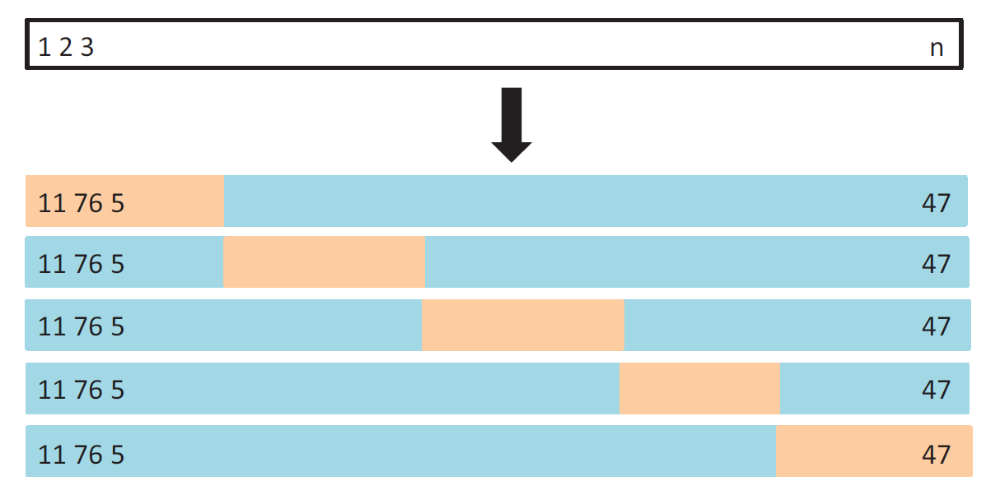
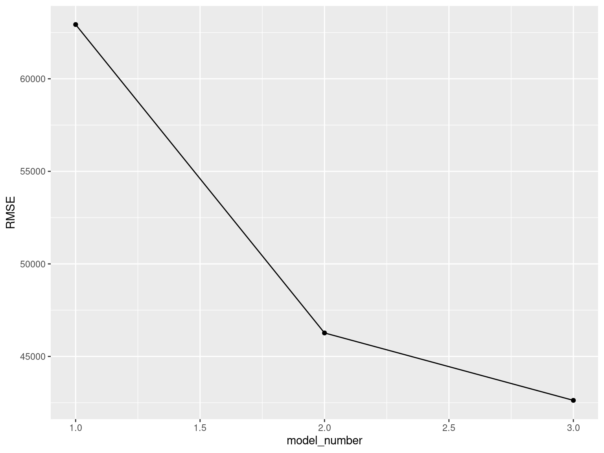
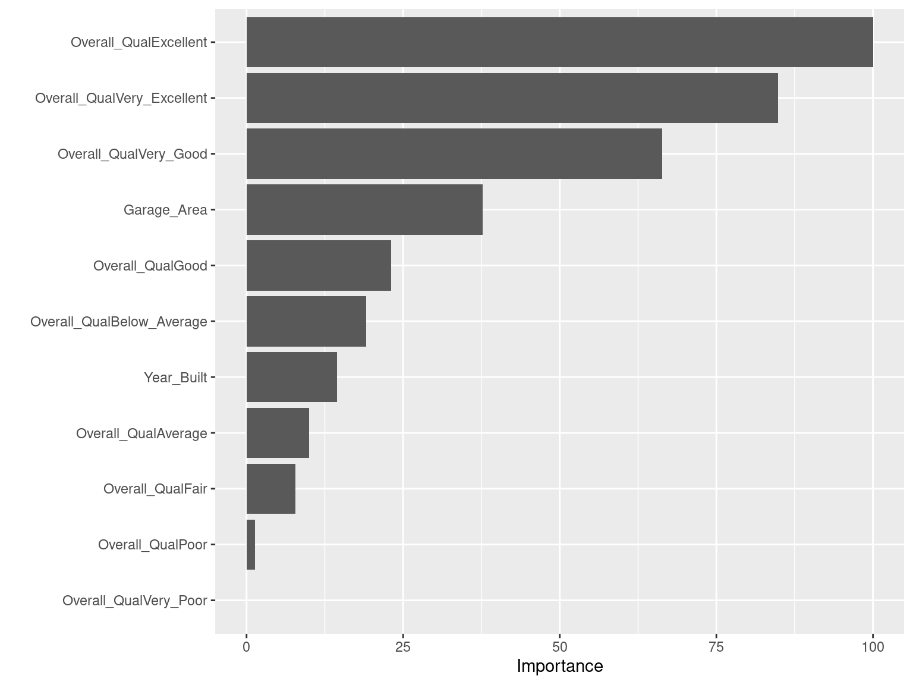
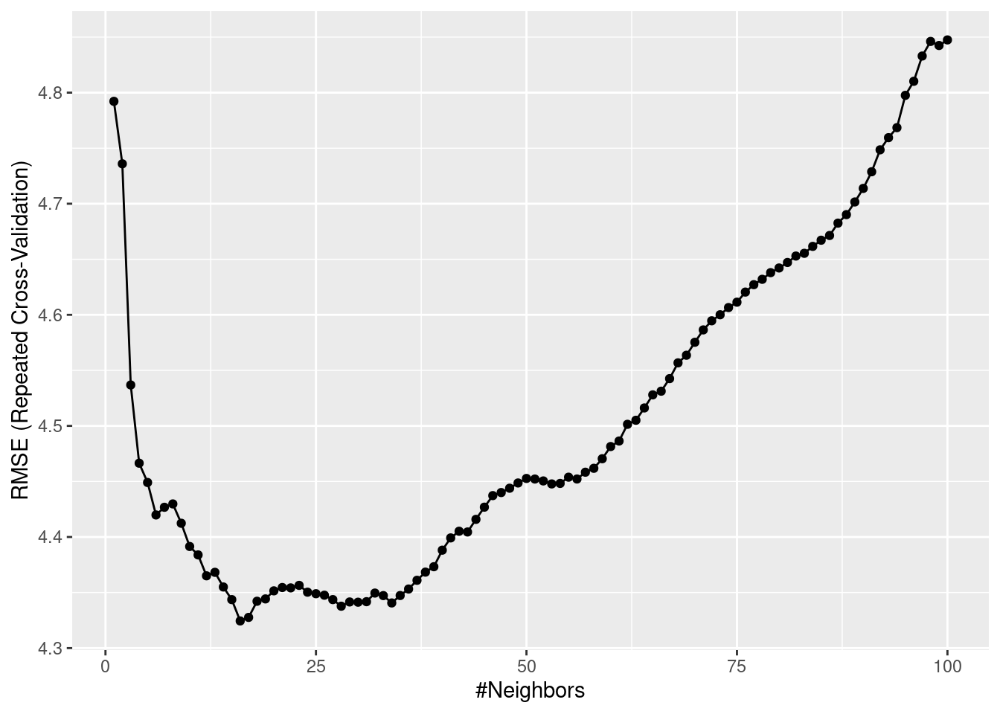

Chapter 5 K-Nearest Neighbors Classifier
Given a value for \(K\) and a test data point \(x_0\), \[P(Y=j | X=x_0)=\dfrac{1}{K} \sum_{x_i \in \mathcal{N}_0} I(y_i = j)\]
where \(\mathcal{N}_0\) is known as the neighborhood of \(x_0\).
5.1 Your Turn!!!
Build a 10-NN classifier with the Default dataset. Consider default as the response variable and balance as the predictor. Follow the steps below.
Load the dataset into R. Observe the dataset, specifically the response variable.
Perform a 70-30 split of the original dataset.
With the training data, construct a 10-NN classifier. See help page of function
knn3.Predict class probabilities on the test data points. See help page of function
predict.knn3. Look carefully at the object that is created.Obtain predicted class labels for a threshold of 0.3.
Create the confusion matrix between the observed and predicted class labels.
5.2 K-Nearest Neighbors Classifier: Split Data
Default dataset
library(ISLR2) # load library
data("Default") # load datasetset.seed(012423) # fix the random number generator for reproducibility
library(caret) # load library
train_index <- createDataPartition(y = Default$default, p = 0.7, list = FALSE) # split available data into 70% training and 30% test datasets
Default_train <- Default[train_index,] # training data, use this dataset to build model
Default_test <- Default[-train_index,] # test data, use this dataset to evaluate model's performance5.3 K-Nearest Neighbors Classifier: Build Model
Default dataset
library(caret) # load package 'caret'
knnfit <- knn3(default ~ balance, data = Default_train, k = 10) # fit 10-nn model5.4 K-Nearest Neighbors Classifier: Predictions
Default dataset
knn_prob_preds <- predict(knnfit, newdata = Default_test, type = "prob") # obtain predictions as probabilitiesthreshold <- 0.3 # set threshold
knn_class_preds <- factor(ifelse(knn_prob_preds[,2] > threshold, "Yes", "No")) # obtain predictions as class labels5.5 K-Nearest Neighbors Classifier: Performance
Default dataset
# create confusion matrix
confusionMatrix(data = relevel(knn_class_preds, ref = "Yes"),
reference = relevel(Default_test$default, ref = "Yes")) ## Confusion Matrix and Statistics
##
## Reference
## Prediction Yes No
## Yes 39 34
## No 60 2866
##
## Accuracy : 0.9687
## 95% CI : (0.9618, 0.9746)
## No Information Rate : 0.967
## P-Value [Acc > NIR] : 0.327332
##
## Kappa : 0.4377
##
## Mcnemar's Test P-Value : 0.009922
##
## Sensitivity : 0.39394
## Specificity : 0.98828
## Pos Pred Value : 0.53425
## Neg Pred Value : 0.97949
## Prevalence : 0.03301
## Detection Rate : 0.01300
## Detection Prevalence : 0.02434
## Balanced Accuracy : 0.69111
##
## 'Positive' Class : Yes
## 5.6 ROC Curve and AUC
The ROC (Receiver Operating Characteristics) curve is a popular graphic for comparing different classifiers across all possible thresholds. The ROC curve plots the Specificity (1-false positive rate) along the x-axis and the Sensitivity (true positive rate) along the y-axis.
Another popular metric for comparing classifiers is the AUC (Area Under the ROC Curve). An ideal ROC curve will hug the top left corner, so the larger the AUC the better the classifier.
5.7 ROC Curve and AUC
Default dataset
library(pROC) # load library## Type 'citation("pROC")' for a citation.##
## Attaching package: 'pROC'## The following objects are masked from 'package:stats':
##
## cov, smooth, var# create object for ROC curve for KNN fit
roc_object_knn <- roc(response = Default_test$default, predictor = knn_prob_preds[,2])## Setting levels: control = No, case = Yes## Setting direction: controls < cases# plot ROC curve
plot(roc_object_knn, col = "red")
# obtain AUC's
auc(roc_object_knn)## Area under the curve: 0.85645.8 Data Splitting
Available data split into training and test datasets.
Training set: these data are used to develop feature sets, train our algorithms, tune parameters, compare models, and all of the other activities required to choose a final model (e.g., the model we want to put into production).
Test set: having chosen a final model, these data are used to obtain an unbiased estimate of the model’s performance.
It is critical that the test set not be used prior to selecting your final model. Assessing results on the test set prior to final model selection biases the model selection process since the testing data will have become part of the model development process.
5.9 Resampling Methods
Idea: Repeatedly draw samples from the training data and refit a model on each sample, and evaluate its performance on the other parts.
Objective: To obtain additional information about the fitted model.
Cross-Validation (CV) is probably the most widely used resampling method. It is a general approach that can be applied to almost any statistical learning method.
5.10 Cross-Validation (CV)
Used for
model selection: select the optimum level of flexibility (tune hyperparameters) or compare different models to choose the best one
model assessment: evaluate the performance of a model (estimate its test error)
We will talk about
Leave-One-Out Cross-Validation (LOOCV)
\(k\)-Fold Cross-Validation
5.12 Leave-One-Out Cross-Validation (LOOCV)
Advantages
- LOOCV will give approximately unbiased estimates of the test error, since each training set contains \(n−1\) observations, which is almost as many as the number of observations in the full training dataset.
- Performing LOOCV multiple times will always yield the same results.
Disadvantages
Can be potentially expensive to implement, specially for large \(n\).
LOOCV error estimate can have high variance.
5.13 \(k\)-Fold Cross-Validation
Randomly divide the training data into \(k\) groups or folds (approximately equal size).
Consider one of these folds as the validation set. Fit the model on the remaining \(k-1\) folds combined, and obtain predictions for the \(k^{th}\) fold. Repeat for all \(k\) folds.

5.14 \(k\)-Fold Cross-Validation: Implementation
Ames Housing dataset
ames <- readRDS("AmesHousing.rds") # load datasetConsider Sale_Price as the response variable. We will compare the following three linear regression models:
with
Garage_Areaas the only predictor;with
Overall_Qualas the only predictor;with
Garage_Area,Year_Built, andOverall_Qualas predictors.
5.15 \(k\)-Fold Cross-Validation: Implementation
Ames Housing dataset
Split the data into training and test data.
set.seed(012423) # fix the random number generator for reproducibility
library(caret) # load library
train_index <- createDataPartition(y = ames$Sale_Price, p = 0.8, list = FALSE) # split available data into 80% training and 20% test datasets
ames_train <- ames[train_index,] # training data, use this dataset to build model
ames_test <- ames[-train_index,] # test data, use this dataset to evaluate model's performance5.16 \(k\)-Fold Cross-Validation: Implementation
Ames Housing dataset
Define CV specifications.
cv_specs_kcv <- trainControl(method = "repeatedcv", # CV method
number = 10, # number of folds
repeats = 5) # each repeated 5 times5.17 \(k\)-Fold Cross-Validation: Implementation
Ames Housing dataset
Implement \(k\)-fold CV with the first model.
m1 <- train(form = Sale_Price ~ Garage_Area, # specify model
data = ames_train, # specify dataset
method = "lm", # specify type of model
trControl = cv_specs_kcv, # CV specifications
metric = "RMSE") # metric to evaluate model
m1 # summary of LOOCV## Linear Regression
##
## 706 samples
## 1 predictor
##
## No pre-processing
## Resampling: Cross-Validated (10 fold, repeated 5 times)
## Summary of sample sizes: 636, 635, 637, 636, 635, 634, ...
## Resampling results:
##
## RMSE Rsquared MAE
## 62931.53 0.4437306 43590.34
##
## Tuning parameter 'intercept' was held constant at a value of TRUEm1$results # estimate and variability of metrics## intercept RMSE Rsquared MAE RMSESD RsquaredSD MAESD
## 1 TRUE 62931.53 0.4437306 43590.34 12411.41 0.1024043 5478.6645.18 \(k\)-Fold Cross-Validation: Implementation
Ames Housing dataset
Implement \(k\)-fold CV with the second model.
m2 <- train(form = Sale_Price ~ Overall_Qual,
data = ames_train,
method = "lm",
trControl = cv_specs_kcv,
metric = "RMSE") ## Warning in predict.lm(modelFit, newdata): prediction from a rank-deficient fit
## may be misleading
## Warning in predict.lm(modelFit, newdata): prediction from a rank-deficient fit
## may be misleadingm2## Linear Regression
##
## 706 samples
## 1 predictor
##
## No pre-processing
## Resampling: Cross-Validated (10 fold, repeated 5 times)
## Summary of sample sizes: 635, 636, 635, 636, 636, 636, ...
## Resampling results:
##
## RMSE Rsquared MAE
## 46268.31 0.6968243 31912.75
##
## Tuning parameter 'intercept' was held constant at a value of TRUEm2$results## intercept RMSE Rsquared MAE RMSESD RsquaredSD MAESD
## 1 TRUE 46268.31 0.6968243 31912.75 10192.63 0.09720067 4282.5795.19 \(k\)-Fold Cross-Validation: Implementation
Ames Housing dataset
Implement \(k\)-fold CV with the third model.
m3 <- train(form = Sale_Price ~ Garage_Area + Year_Built + Overall_Qual,
data = ames_train,
method = "lm",
trControl = cv_specs_kcv,
metric = "RMSE")
m3## Linear Regression
##
## 706 samples
## 3 predictor
##
## No pre-processing
## Resampling: Cross-Validated (10 fold, repeated 5 times)
## Summary of sample sizes: 636, 634, 635, 636, 636, 636, ...
## Resampling results:
##
## RMSE Rsquared MAE
## 42626.49 0.745911 28441.93
##
## Tuning parameter 'intercept' was held constant at a value of TRUEm3$results## intercept RMSE Rsquared MAE RMSESD RsquaredSD MAESD
## 1 TRUE 42626.49 0.745911 28441.93 10024.47 0.1022967 3484.7865.20 \(k\)-Fold Cross-Validation: Results
Ames Housing dataset
Compare \(k\)-fold CV results for different models.
# create data frame to plot results
df <- data.frame(model_number = 1:3, RMSE = c(m1$results$RMSE,
m2$results$RMSE,
m3$results$RMSE))
# plot results from LOOCV
ggplot(data = df, aes(x = model_number, y = RMSE)) +
geom_point() + geom_line()
5.21 Final Model and Prediction Error Estimate
Ames Housing dataset
# after choosing final (optimal) model, refit final model using ALL training data, and obtain estimate of prediction error from test data
m3$finalModel # final model##
## Call:
## lm(formula = .outcome ~ ., data = dat)
##
## Coefficients:
## (Intercept) Garage_Area
## -504482.40 78.99
## Year_Built Overall_QualAverage
## 320.09 -18028.34
## Overall_QualBelow_Average Overall_QualExcellent
## -34620.70 163226.47
## Overall_QualFair Overall_QualGood
## -63928.81 30780.92
## Overall_QualPoor Overall_QualVery_Excellent
## -76426.87 261135.65
## Overall_QualVery_Good Overall_QualVery_Poor
## 81711.39 -69470.99final_model_preds <- predict(m3, newdata = ames_test) # obtain predictions on test data
pred_error_est <- sqrt(mean((ames_test$Sale_Price - final_model_preds)^2)) # calculate RMSE (estimate of prediction error) from test data
pred_error_est## [1] 34006.685.22 Variable Importance
Ames Housing dataset
# variable importance
library(vip)##
## Attaching package: 'vip'## The following object is masked from 'package:utils':
##
## vivip(object = m3, # CV object
num_features = 20, # maximum number of predictors to show importance for
method = "model") # model-specific VI scores
5.23 Bias-Variance Trade-off for LOOCV and \(k\)-fold CV
- LOOCV has very less bias. Using \(k=5\) or \(10\) yields more bias than LOOCV.
For LOOCV, the error estimates for each fold are highly (positively) correlated. \(k\)-fold CV error estimates are somewhat less correlated. LOOCV error estimate has higher variance than \(k\)-fold CV error estimate.
Typically, \(k=5\) or \(10\) is chosen.
5.24 Your Turn!!!
Auto dataset
Load the dataset.
library(ISLR2) # load library
data("Auto") # load datasetConsider mpg as the response and horsepower as the predictor.
Objective: Find the optimum choice of \(K\) in the KNN approach with 5-fold CV repeated 5 times. You can use the following steps.
Split the data into training and test data (80-20 split).
Specify CV specifications using trainControl.
Create an object k_grid using the following code.
k_grid <- expand.grid(k = seq(1, 100, by = 1)) # creates a grid of k values to be used (1 to 100 in this case)Use the train function to run CV. Use method = “knn”, tuneGrid = k_grid, and metric = “RMSE”.
Obtain the results and plot them. What is the optimum \(k\) chosen?
Create the final model using the optimum \(k\) and estimate its prediction error from the test data.
5.25 Your Turn!!!: Split Data
Auto dataset
set.seed(012423) # fix the random number generator for reproducibility
library(caret) # load library
train_index <- createDataPartition(y = Auto$mpg, p = 0.8, list = FALSE) # split available data into 80% training and 20% test datasets
Auto_train <- Auto[train_index,] # training data, use this dataset to build model
Auto_test <- Auto[-train_index,] # test data, use this dataset to evaluate model's performance5.26 Your Turn!!!: Perform CV
Auto dataset
set.seed(012423) # fix the random number generator for reproducibility
# CV specifications
cv_specs <- trainControl(method = "repeatedcv", number = 5, repeats = 5)
# specify grid of 'k' values to search over
k_grid <- expand.grid(k = seq(1, 100, by = 1))
# train the KNN model to find optimal 'k'
knn_cv <- train(form = mpg ~ horsepower,
data = Auto_train,
method = "knn",
trControl = cv_specs,
tuneGrid = k_grid,
metric = "RMSE")5.27 Your Turn!!!: Observe CV Results
Auto dataset
knn_cv # model training resultsggplot(knn_cv) # plot the model training results for different 'k'
5.28 Your Turn!!!: Final Model
Auto dataset
# final model with optimal 'k' chosen from 'knn_fit' results
knn_cv$finalModel # final model## 16-nearest neighbor regression model# obtain predictions on test data
final_model_preds <- predict(knn_cv, newdata = Auto_test)
# estimate prediction error using RMSE
sqrt(mean((Auto_test$mpg - final_model_preds)^2)) # RMSE## [1] 4.3140335.29 Mid-Term Check
Are you comfortable with the concepts? Are you comfortable with the coding aspect? Explain.
What study habits have been working for you with this course? What habits haven’t worked?
Please mention any comments about the course in general (classwork, live coding, homework, quizzes, course structure and workflow, grading guidelines, etc.)